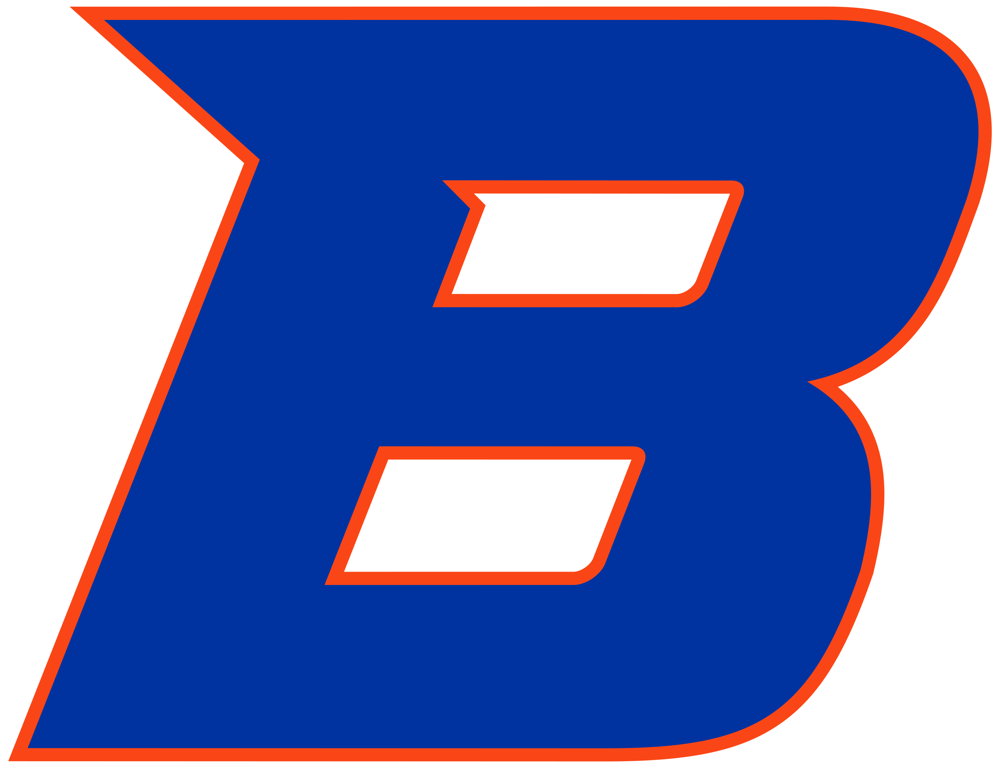

<ion-grid>
  <ion-row>
    <ion-col size="12" sizeSm="10" sizeMd="8" sizeLg="6" offsetSm="1" offsetMd="2" sizeXl="6" offsetLg="3" offsetXl="3">
      <ion-card class="w-auto max-w-3xl mx-auto">
        <ion-card-header>
          <div class="flex flex-col md:flex-row justify-between md:items-center">

            <div class="flex items-center space-x-4">
              <ion-thumbnail>
                
              </ion-thumbnail>
          
              <p class="font-medium text-xl -mt-1">Student Software Developer</p>
            </div>

            <p>Feb 2022 - Present</p>
          </div>

        </ion-card-header>

        <ion-card-content>

          <div class="mb-4">
            <p><strong>Led Development Team:</strong></p>
            <p class="ml-8">
              Guided a group of student developers in building the <a href="https://assignment-calculator.boisestate.edu"> Assignment Calculator</a>, an end-to-end full-stack application with an integrated admin portal for efficient assignment management.
            </p>
          </div>
          <div class="mb-4">
            <p><strong>Revamped Bottom Line Estimator:</strong></p>
            <p class="ml-8">
              Modernized the <a href="https://estimator.boisestate.edu"> Bottom Line Estimator</a> app using Angular and .NET, introducing new features, improving user experience, and simplifying maintenance.
            </p>
          </div>
          <div class="mb-4">
            <p><strong>Subscription-Based Outage Notification:</strong></p>
            <p class="ml-8">
              Engineered a subscription-based outage notification system for Boise State’s <a href="https://reporting.boisestate.edu">Reporting Site</a>, automating email notifications to subscribers using AWS SQS.
            </p>
          </div>
          <div class="mb-4">
            <p><strong>Enhanced myBoiseState Portal</strong></p>
            <p class="ml-8">
              Integrated numerous features into the revamped <a href="https://my.boisestate.edu">myBoiseState</a> portal, collaborating closely with stakeholders and conducting thorough A/B testing for seamless user experience.            </p>
          </div>

          <div>
            <ion-chip color="secondary">Angular</ion-chip>
            <ion-chip color="secondary">Javascript</ion-chip>
            <ion-chip color="secondary">Typescript</ion-chip>
            <ion-chip color="secondary">C#</ion-chip>
            <ion-chip color="secondary">.NET</ion-chip>
            <ion-chip color="secondary">AWS</ion-chip>
          </div>

        </ion-card-content>
      </ion-card>
    </ion-col>
  </ion-row>
</ion-grid>
